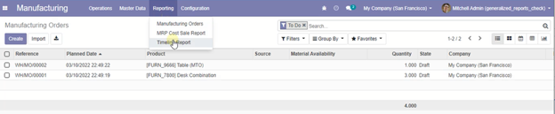
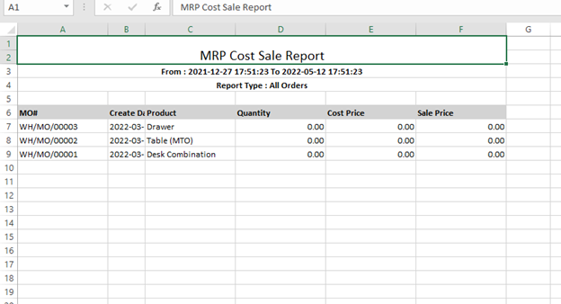
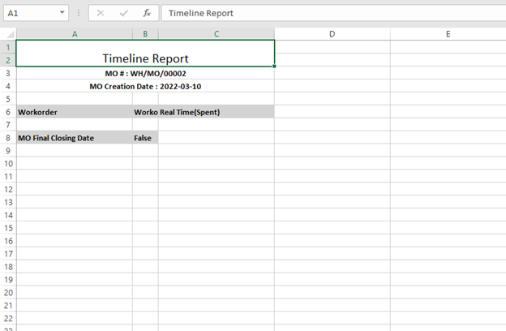
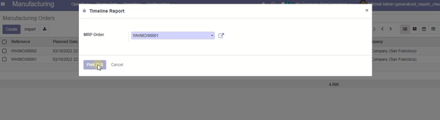
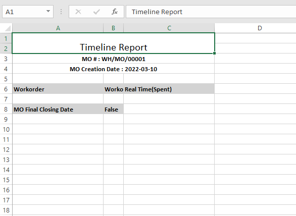
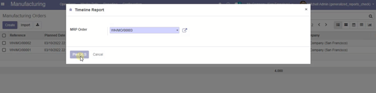
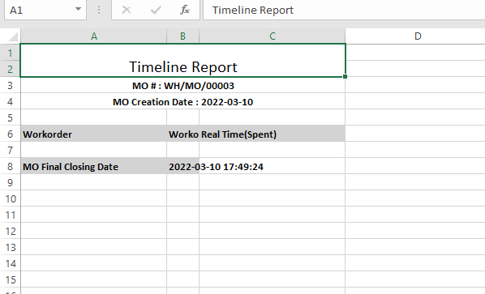

Manufacturing/MRP customized Reports:
Develop all your MRP/Manufacturing reports on
the customized reporting app on Odoo. Be aware of each and every element of your manufacturing processes
by creating customized reports. Through the application, you can create MRP Cost Sale Reports for your
Manufacturing Orders. Also, through the customized reports app, you can make different timeline reports
for numerous orders. These reports provide a crystal clear summation of your manufacturing processes by
including even small details on the reports.



Single timeline report generation facility for every order
Through the app, you can build various timeline reports for various orders
according to your choice.





